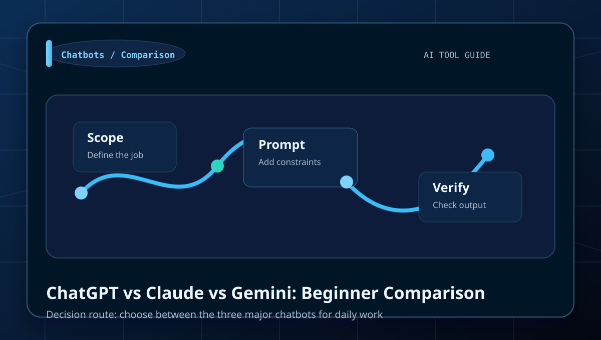
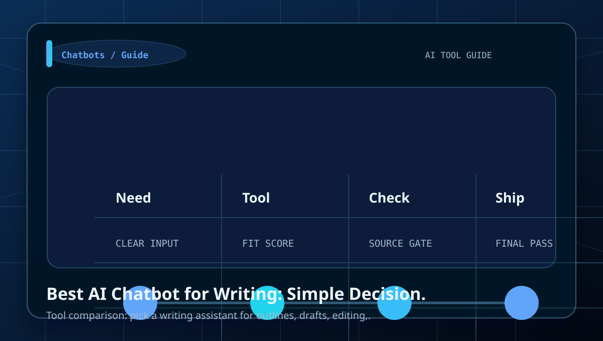
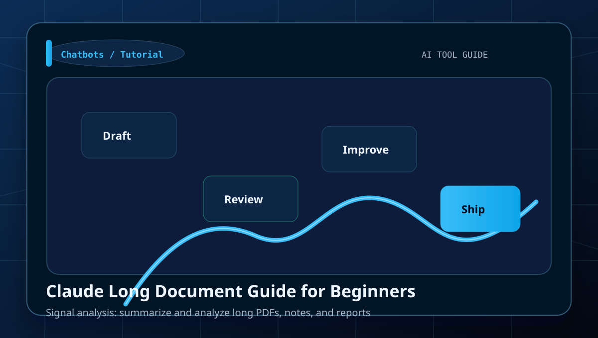
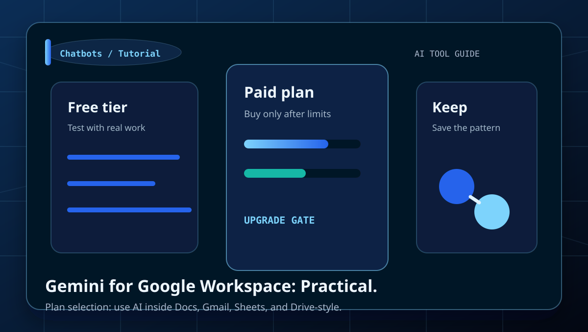
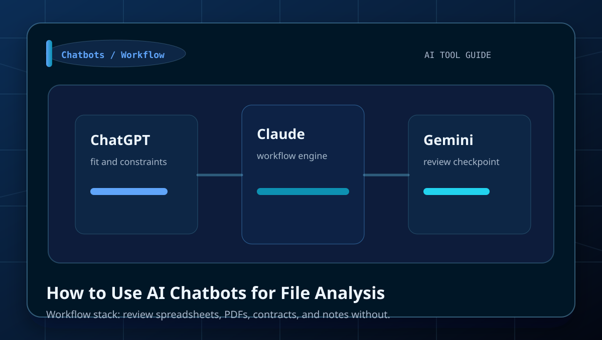
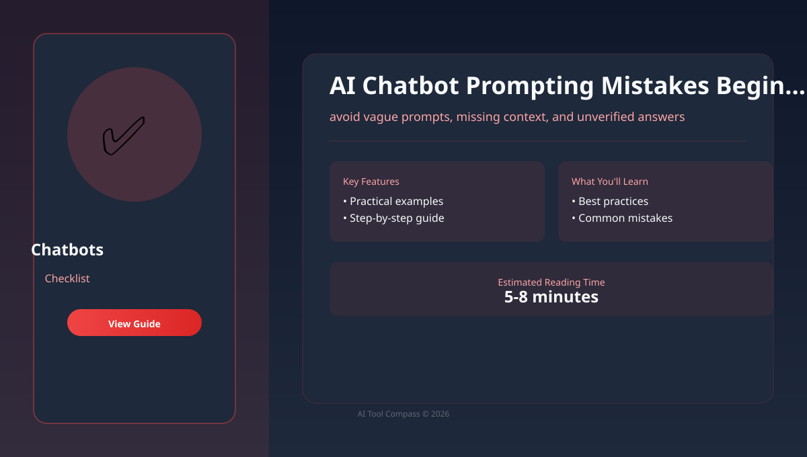
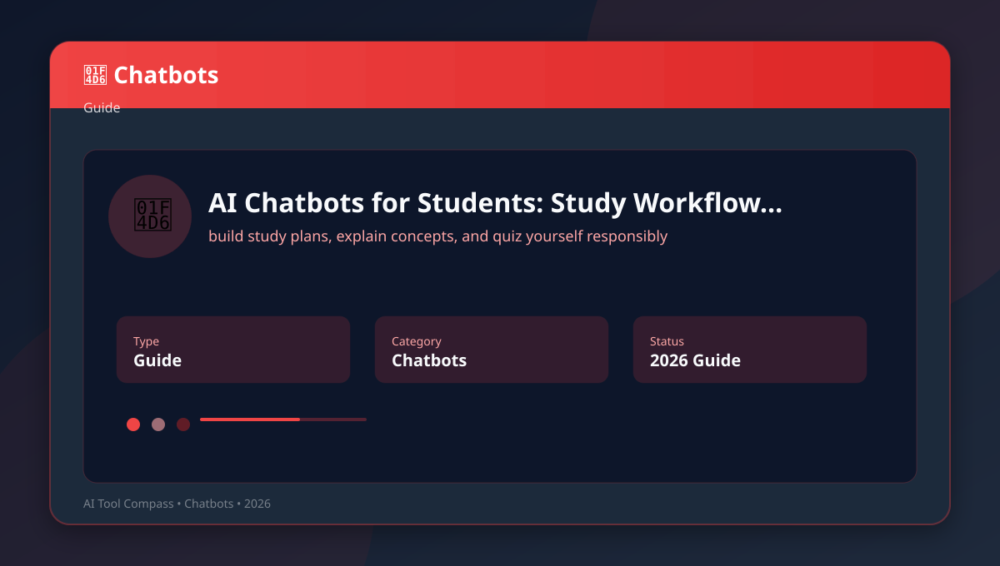
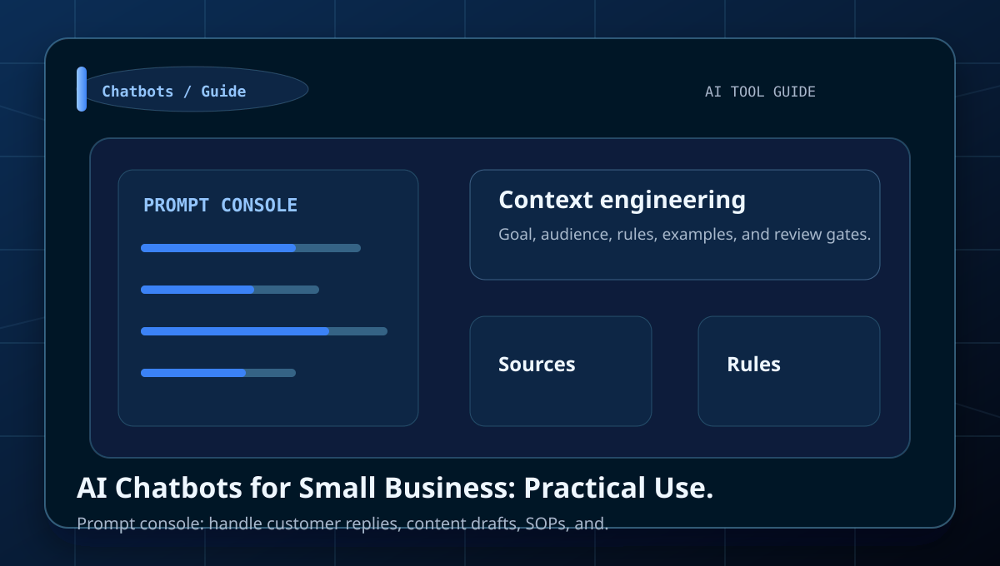
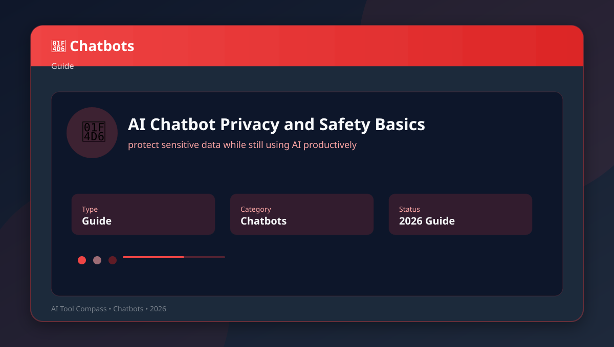
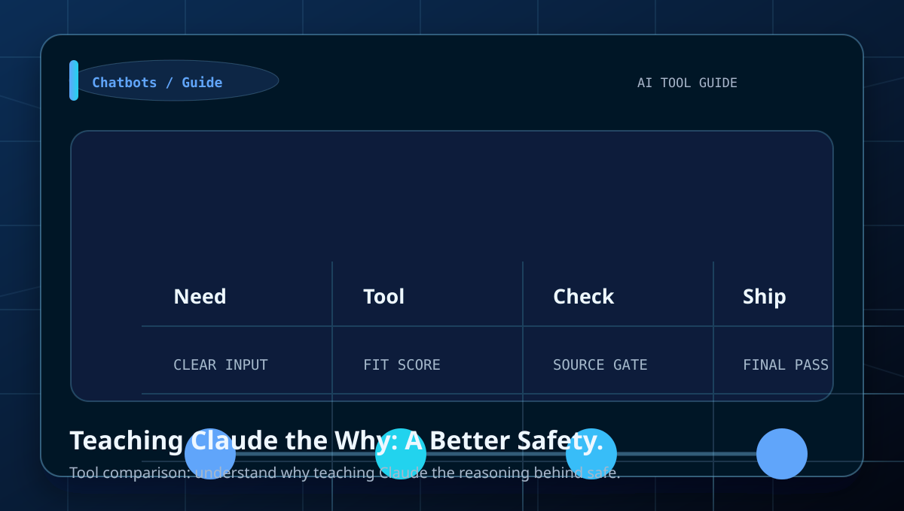

Category
AI Chatbots Guides
Tutorials, comparisons, prompt examples, and beginner workflows for writing, reasoning, file analysis, planning, and everyday assistant work.
Best for
writing, reasoning, file analysis, planning, and everyday assistant work.
ChatGPT, Claude, Gemini, Microsoft Copilot
Use the comparison tables to decide which tool fits each job.
Library
All AI Chatbots articles

ChatGPT vs Claude vs Gemini: Beginner Comparison
Learn how to choose between the three major chatbots for daily work with a clear workflow, examples, and beginner mistakes to avoid.

Best AI Chatbot for Writing: Simple Decision Guide
Learn how to pick a writing assistant for outlines, drafts, editing, and tone with a clear workflow, examples, and beginner mistakes to.
ChatGPT Beginner Workflow: From Prompt to Finished Draft
Learn how to turn rough ideas into a usable article or email with a clear workflow, examples, and beginner mistakes to avoid.

Claude Long Document Guide for Beginners
Learn how to summarize and analyze long PDFs, notes, and reports with a clear workflow, examples, and beginner mistakes to avoid.

Gemini for Google Workspace: Practical Beginner Guide
Learn how to use AI inside Docs, Gmail, Sheets, and Drive-style workflows with a clear workflow, examples, and beginner mistakes to avoid.

How to Use AI Chatbots for File Analysis
Learn how to review spreadsheets, PDFs, contracts, and notes without getting lost with a clear workflow, examples, and beginner mistakes.

AI Chatbot Prompting Mistakes Beginners Should Avoid
Learn how to avoid vague prompts, missing context, and unverified answers with a clear workflow, examples, and beginner mistakes to avoid.

AI Chatbots for Students: Study Workflow Guide
Learn how to build study plans, explain concepts, and quiz yourself responsibly with a clear workflow, examples, and beginner mistakes.

AI Chatbots for Small Business: Practical Use Cases
Learn how to handle customer replies, content drafts, SOPs, and planning with a clear workflow, examples, and beginner mistakes to avoid.

AI Chatbot Privacy and Safety Basics
Learn how to protect sensitive data while still using AI productively with a clear workflow, examples, and beginner mistakes to avoid.

Teaching Claude the Why: A Better Safety Alignment Story
Alignment stories become product stories when they improve explanation quality and reduce policy whiplash in ambiguous tasks.